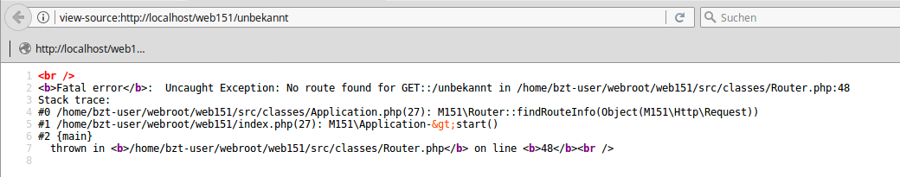

{% extends "../_base_template.html" %}
{% block title %}Lektion 9 - Datenschutz {% endblock %}

{% block sections %}
<section data-markdown>
<textarea data-template>
<i class="fas fa-graduation-cap"></i> M151 - DB in Web-App einbinden
=============================

Heutiges Ziel
--------------

* Sie wissen, vor was Sie Server und Applikationen schützen müssen
* Sie kennen einfache technische Massnahmen, um gängige Attacken zu vermeiden

</textarea>
</section>

<section data-markdown>
<textarea data-template>
<i class="fas fa-flask"></i> HA: Gedanken zu Web-Angriffen
=============================

**Antworten zu den Aufgaben von letzter Lektion**: Tragen wir zusammen:

* Vor wem (oder vor was) müssen Sie Ihre Web-Applikation schützen?
* WAS müssen Sie schützen?
* Was für Angriffsmöglichkeiten existieren, um Ihre Web-Applikation zu knacken / an unbefugte Daten zu gelangen?

**Padlet zum Sammeln:**
https://padlet.com/alex_schenkel/datenschutz

</textarea>
</section>

<section data-markdown>
<textarea data-template>
<i class="fas fa-flask"></i> Schutz vor Hacks / Missbrauch
=============================

<i class="fas fa-bolt"></i> **Must-Do's** für Entwickler von Web-Applikationen <i class="fas fa-bolt"></i>

Öffentlich erreichbare Web-Applikationen sind heute täglich Hunderten von Angriffsversuchen ausgesetzt.
Wir behandeln einige ausgelesene Angriffsszenarien und Gegenmassnahmen in einer späteren Lektion / mit Kurzreferaten.

Wir wollen heute ein paar sehr einfache, aber bereits sehr effektive Massnahmen erarbeiten, welche Sie als Web-Entwickler umsetzen können,
und bereits viel zur Sicherheit Ihrer Applikation beitragen:

* Programmfehler / Programminformationen unterdrücken / behandeln
* Passwörter nie im Klartext speichern
* direkte Links auf vertrauliche Dateien unterbinden
* Speichern Sie nur Daten, die Sie wirklich benötigen!

Wir erarbeiten 2 Themen in einer kurzen Gruppenarbeit, und tragen die Ergebnisse dann zusammen.

Zeit:
* 20 min Erarbeiten Ihres Themas
* je 10 min Zusammentragen / Erläutern für die Mitschüler
</textarea>
</section>

<section data-markdown>
<textarea data-template>
<i class="fas fa-flask"></i> Schutz vor Hacks / Missbrauch
=============================

### Gruppenarbeit zum Thema „Fehler / Informationen unterdrücken“

Für erfolgreiche Hacks muss ein Angreifer möglichst viel über das anzugreifende System in Erfahrung bringen: Je mehr der Angreifer weiss,
desto eher findet er eine (vielleicht schon bekannte?) Lücke. Es muss also unser erstes Ziel sein,
so wenig Informationen zum System wie möglich preiszugeben.

**Aufgabe:**

Finden Sie Antworten auf untenstehende Fragen:

1. Öffnen Sie die Seite auf meinem Rechner: http://meine-ip:8020/dbtest. Die Seite produziert eine Fehlerausgabe.
  * Welche Informationen zum System können Sie aus der Antwort (HTTP Body) herausfinden?
  * Welche zusätzlichen Informationen finden Sie im HTTP-Header?
  * Wie können Sie als Hacker diese Informationen verwenden?
2. Die Fehlermeldung wird vom PHP-Programm ausgegeben. Sie finden das Beispiel in der abgelieferten MVC-Webapp-Vorlage in der Datei „DefaultController.php“.
  Wie können Sie (mittels PHP) verhindern, dass die Fehlerausgabe im Browser angezeigt wird?
</textarea>
</section>

<section data-markdown>
<textarea data-template>
<i class="fas fa-flask"></i> Schutz vor Hacks / Missbrauch
=============================

### Gruppenarbeit zum Thema „Klartext-Passwörter“

Für Login-Mechanismen ist es notwendig, dass Sie in Ihrer Applikation Benutzer und Passwörter speichern, um diese bei einem Login-Versuch vergleichen zu können.
Es ist eine schlechte Idee, Passwörter im Klartext in Ihrem System abzuspeichern.

**Aufgabe:**

Recherchieren Sie, um folgende Fragen dazu beantworten zu können:
* Was ist die Gefahr von Klartext-Passwörtern in Ihrer Datenbank?
* Was bedeutet „Passwort-Hash“, und was ist der Vorteil eines solchen gegenüber eines Klartext-Passworts?
* Wie erzeugen Sie in PHP einen Passwort-Hash?
* Wie überprüfen Sie in PHP einen Passwort-Hash?
* Was ist ein „Hash Salt“, und wo findet er bei Passwort-Hashes Verwendung? Wieso?
</textarea>
</section>

<section data-markdown>
<textarea data-template>
<i class="fas fa-flask"></i> Schutz vor Hacks / Missbrauch
=============================
### Gruppenarbeit zum Thema „Direktliks auf vertrauliche Dateien“

Dateien, welche auf dem Webserver liefern, werden von diesem ausgeliefert.
Nun sind aber nicht alle Dateien für alle Augen gedacht: Beispielsweise sollten
vom Benutzer hochgeladene vertrauliche Dokumente nicht einfach abrufbar sein. Stellen Sie
sich vor, dass Ihre geheimen Dokumente einfach so abrufbar wären:

http://meine-seite.ch/geheime_dokumente/spionagebericht.pdf

Solche Zugriffe müssen zwar möglich sein, aber **NUR** für berechtigte Benutzer.


**Aufgabe:**

Recherchieren Sie, um folgende Fragen dazu beantworten zu können:
* Welche technischen Massnahmen gibt es (in Apache und / oder PHP), um Direktzugriffe auf Dateien zu verhindern?
* Wie sorgen Sie dafür (mittels PHP), dass **berechtigte** Benutzer trotzdem die Dateien herunterladen können?
</textarea>
</section>

<section data-markdown>
<textarea data-template>
<i class="fas fa-graduation-cap"></i> Schutz vor Hacks / Missbrauch: „Must-Do“ für Entwickler von Web-Applikationen
=============================

Die folgenden Vorkehrungen sind heute Standard und sollten von jedem Web-Applikations-Entwickler beherzigt werden.
Dies sind die einfachsten, aber bereits sehr effektiven Methoden, um Angriffe / Hacks zu vermindern:

* Programmfehler / Informationen unterdrücken / behandeln
* direkte Links auf vertrauliche Dateien unterbinden
* Passwörter nie im Klartext speichern
* Speichern Sie nur Daten, die Sie wirklich benötigen!
</textarea>
</section>

<section data-markdown>
<textarea data-template>
<i class="fas fa-graduation-cap"></i> Schutz vor Hacks / Missbrauch: Stealth Mode!
=============================
**Programmfehler / Programminformationen unterdrücken: Stealth Mode!**

Was passiert, wenn in Ihrem Programm ein unvorhergesehener Programmfehler auftritt? (Bsp: unbekannte URL-Route)

Es lohnt sich, dies einmal auszuprobieren. Als Beispiel hier ein Fehler aus unserem MVC-Framework bei einer unbekannten Route:



Wow, das sind aber schon viele Informationen!
* Der Angreifer weiss nun, dass die Applikation mit PHP >= 5.3 (Namespaces) läuft
* Der Angreifer kennt die Datei-Struktur der Applikation UND des Servers
* <i class="far fa-hand-point-right"></i> dies lässt Rückschlüsse auf bekannte Frameworks zu. So können gezielt bekannte Sicherheitslücken ausgenutzt werden.

Mit solchen Informationen lassen sich dann gezielt Hacks aufspüren. Je mehr ein Hacker über sein Angriffsziel weiss, desto eher findet er eine Lücke.
Stellen Sie sicher, dass solche Fehler nicht gegen aussen publiziert werden können!

</textarea>
</section>

<section data-markdown>
<textarea data-template>
<i class="fas fa-graduation-cap"></i> Fehler im Programm behandeln
=============================

Fehler passieren, sowohl zur Programmier- wie auch zur Laufzeit. Manche Fehler sind sogar gewollt, wie der oben gezeigte.
Vermeiden Sie jedoch, dass solche Fehlermeldungen bis zum Browser gelangen.

Eine einfache Methode dazu ist in PHP das Auffangen von Exceptions mittels try/catch, hier am „Ort des Geschehens“ in Application.php
(dort, wo die Route ermittelt wird und der Fehler auftritt):

**Vorher**
```php
public function start() {
    // --> Hier passiert der Fehler:
    $routeInfo = Router::findRouteInfo($this->request);
    $controller = Router::getRouteController($routeInfo);
    $this->controller = $controller;
    $this->routeInfo = $routeInfo;
    $actionFn = $routeInfo['action'];
    $ret = $controller->$actionFn($this->request);
}
```

**Nachher**
```php
public function start() {
    try {
        // --> Hier passiert der Fehler:
        $routeInfo = Router::findRouteInfo($this->request);
        $controller = Router::getRouteController($routeInfo);
        $this->controller = $controller;
        $this->routeInfo = $routeInfo;
        $actionFn = $routeInfo['action'];
        $ret = $controller->$actionFn($this->request);
    } catch (\Exception $e) {
        // … und wird hier aufgefangen und in eine „vertretbare“ Fehlermeldung ausgegeben:
        echo "Hoppla, da ist ein Fehler aufgetreten! Fehler-Code: {$e->getCode()}.";
        return;
    }
}
```
</textarea>
</section>

<section data-markdown>
<textarea data-template>
<i class="fas fa-graduation-cap"></i> Fehlerausgabe unterdrücken
=============================

In PHP besteht weiterhin die Möglichkeit, Fehlerausgaben an den Browser ganz zu unterdrücken. Dies ist zur Entwicklungszeit nicht sinnvoll (da mühsam),
bei Inbetriebnahme auf der Produktion jedoch sehr zu empfehlen.

Folgende Befehle **unterdrücken die Fehleranzeige**: Die Fehler werden dann nur noch im Error-Log des Web-Servers aufgezeichnet:

```php
// PHP-Fehler nicht mehr anzeigen:
ini_set('display_errors', 0);
// PHP-Startup-Fehler (z.B. fehlende Treiber etc.) nicht mehr anzeigen:
ini_set('display_startup_errors', 0);
```

Zur **Entwicklungszeit** empfehlen sich folgende Einstellungen:

```php
// Fehler an Browser anzeigen:
ini_set('display_errors', 1);
ini_set('display_startup_errors', 1);
// Alle Fehler, Warnungen, Infos etc. ausgeben:
error_reporting(E_ALL);
```
</textarea>
</section>

<section data-markdown>
<textarea data-template>
<i class="fas fa-graduation-cap"></i> Direkt zugängliche, verlinkte (jedoch vertrauliche) Dateien
=============================

Gibt es in Ihrem Programm vertrauliche Dateien, welche der (autorisierte) Benutzer herunterladen kann? Sind diese direkt via URL erreichbar, also z.B. so:

http://meine-seite.ch/geheime_dokumente/spionagebericht.pdf

Dies ist eine sehr gefährliche Sicherheitslücke: Der Web-Server liefert jedem, der den Link kennt, diese Datei aus.
Schlimmer noch, meist sind Suchmacshinen-Crawler "schlau genug", um solche Dateien zu finden: Sie finden ihre geheime Datei also
sogar via Suchmaschine.

 Haben Sie Dokumente, welche nur von autorisierten Benutzer zugänglich sein dürfen, müssen Sie diese schützen.
 Links können kopiert, weitergegeben und sogar von Suchmaschinen indiziert werden.
</textarea>
</section>

<section data-markdown>
<textarea data-template>
<i class="fas fa-graduation-cap"></i> Direkt zugängliche, verlinkte (jedoch vertrauliche) Dateien
=============================

Für den Schutz solcher direkt zugänglicher Dateien haben Sie folgende Möglichkeiten:

* Verhindern Sie, dass die Dateien direkt via Webserver abgerufen werden können:
entweder via Apache .htaccess-Direktive:

```
# /webroot/geheime_dokumente/.htaccess:
# Zugriff für alle sperren:
Deny from all
```
* oder Sie platzieren die Dokumente **ausserhalb** des von Apache erreichbaren Web-Roots.

**Liefern Sie die Dateien stattdessen über PHP aus**, anstatt direkt vom Webserver Apache:
So haben Sie die Möglichkeit, den Zugriff anhand des Login zu prüfen, z.B. so:
```php
// .....
// BEISPIEL: in Ihrem Controller / Action-Funktion:
// Route für /getFile?file=geheimes_dokument.pdf
public function getFile(Request $res) {
    if ($Benutzer_ist_berechtigt === true) {
        header('Content-Type: application/pdf');
        readfile('/pfad/zu/meinem/geheimen_dokument.pdf');
    } else {
        echo „Fehler: Zugriff verweigert“;
    }
}
```
</textarea>
</section>

<section data-markdown>
<textarea data-template>
<i class="fas fa-graduation-cap"></i> Passwörter im Klartext
=============================

Für Benutzer-Authentifikationen wird in vielen Fällen ein „Shared Secret“ benutzt: Sowohl der Benutzer wie auch der Webserver kennen ein gemeinsames Geheimnis,
ein Passwort: Durch Vergleich der Passwörter wird der Zugang gewährt / verweigert.

Dazu ist es allerdings notwendig, dass der Server dieses „Shared Secret“ kennt, also speichert.

Viele Applikationen speichern also die Benutzerpasswörter in einer Benutzer-Tabelle:

ID | Login | Passwort
---|-------|----------
1  | alex  | abc
2  | hans  | def

Dies ist sehr problematisch:

1. Die Passwörter sind allen Personen ersichtlich, welche Zugriff auf die Datenbank haben (System-Admins, Applikations-Verantwortliche etc.).
   Dies verletzt die Datenschutz-Vorgaben: So hat jeder dieser Personen die Möglichkeiten, sich als dieser User auszugeben. Schlimmer noch:
   Vermutlich kann er mit diesen Login-Daten auch auf ANDEREN Systemen einloggen, wenn der Benutzer aus Bequemlichkeit dieselben Daten verwendet.
2. Gleiches gilt für Hacker: Eine solche Tabelle ist natürlich gefundenes Fressen für Hacker bei Datendiebstahl:
   Mit diesen Daten haben die Hacker sofort Zugriff auf andere Dienste unter dem Deckmantel dieser Benutzer → Integritätsverlust

<i class="far fa-hand-point-right"></i> Passwörter im Klartext zu speichern sollte **auf jeden Fall vermieden werden**!

</textarea>
</section>

<section data-markdown>
<textarea data-template>
<i class="fas fa-graduation-cap"></i> Passwort-Hashing
=============================

(Quelle: http://php.net/manual/de/faq.passwords.php)

**Passwort-Hashing** ist eine der grundlegendsten Sicherheitsüberlegungen, die beim Design einer Anwendung bedacht werden müssen.
Ohne Hashing können im Falle eines erfolgreichen Angriffs alle Userpasswörter in Ihrer Datenbank von einem Angreifer gestohlen und ohne Umwege
in anderen Anwendungen (seien es Ihre oder die Anderer) benutzt werden. Dies ist oft der Fall, da viele User für verschiedene Dienste die gleichen
Passwörter verwenden.

Eine **Hash-Funktion** ist eine mathematische **Einweg-Berechnung**: Sie errechnet einen Wert (den Hash) aus einer Eingabemenge (dem Klartext-Passwort).
Rückrechnen ist aber nicht oder nur mit grossem Aufwand möglich (Quelle: https://de.wikipedia.org/wiki/Hashfunktion)

Wenn Sie Passwörter vor dem Abspeichern in der Datenbank hashen, machen Sie es einen Angreifer schwerer die ursprünglichen Passwörter herauszufinden.
Sie haben jedoch weiterhin die Möglichkeit eingegebene Userpasswörter zu hashen und die Hashwerte zu vergleichen um herauszufinden,
ob der User das richtige Passwort eingegeben hat.

Es ist jedoch wichtig zu wissen, dass Hashen nur das Auslesen der Passwörter aus dem Datenspeicher (z.B.: Datenbank oder Datei) erschwert.
Sollte es einen Angreifer gelingen, Code in Ihre Anwendung einzuschleusen, so kann er die Passwörter der User evtl. Auslesen bevor dieses gehasht werden.

Speichern Sie somit **NUR** Passwort-Hashes ab. Erstellen Sie diese Hashes mit einem sicheren Hash-Algorithmus (siehe Quelle).
Die Passwort-Tabelle sollte also nur Passwort-Hashes beinhalten:

ID | Login | Passwort
---|-------|------------------
1  | alex  | $2y$10$H2dv6O7Oo2yFnarLhDwz4eSEZ7cgYhgZ7mWlNKsnQjtBY9ALPmmba
2  | hans  | $2y$10$oMEcILNoYpKtxdAiSjPXMuR57ZC64czhmwkzZ4kipwnp34l3eMhEe
</textarea>
</section>

<section data-markdown>
<textarea data-template>
<i class="fas fa-graduation-cap"></i> Passwort-Hashes in PHP erzeugen
=============================

PHP stellt bereits native Funktionen zum Erzeugen und Verifizieren von Passwort-Hashes zur Verfügung:

```php
// Erzeugung eines Hashes (zur Speicherung in der Datenbank):
$hashwert = password_hash('Mein Passwort',PASSWORD_DEFAULT);

// Vergleichen eines Plain-Text-Passworts mit dem gespeicherten Passwort-Hash (zur Prüfung der Identität):
$ok = password_verify('Mein eingegebenes Passwort','$2y$10$H2dv6O7Oo2yFnarLhDwz4eSEZ7cgYhgZ7mWlNKsnQjtBY9ALPmmba');
```

Diese Funktion verwendet automatisch einen modernen, sicheren Hash-Algorithmus (In diesem Fall: **bcrypt** oder **argon2i**)

</textarea>
</section>

<section data-markdown>
<textarea data-template>
<i class="fas fa-graduation-cap"></i> Datenspeicherung, Zugriffs-Schutz
=============================

**Speichern Sie nur Daten, die Sie wirklich benötigen,** und schützen Sie den Zugriff
auf diese.

Gerade wenn Sie personenbezogene Daten verarbeiten, ist dies umso wichtiger: Benötigen Sie
wirklich ein Foto? Eine Sozialversicherungs-Nummer? Eine Telefonnummer? Wenn nicht,
**erfassen Sie diese nicht!**.

**Angriffsmethode: _Direct Object Reference_**

Beim _Direct Object Reference_-Angriff nutzt der Angreifer aus, dass Sie bestimmte
Ressourcen via URL / Parameter referenzieren können. Beispiel:

Sie rufen Ihr persönliches User-Profil ab. Dabei ruft die Applikation folgende URL auf:

    https://my-app/users/profile?id=233

Die so mitgelieferte ID Ihres Benutzers liefert Ihre Profildaten. Ein Angreifer kann nun versuchen,
den Aufruf einfach mit einer anderen User-ID auszuführen:

    https://my-app/users/profile?id=999


**Sie müssen also durch Berechtigungsprüfungen auf der _Server-Seite_ sicherstellen,
dass solche Direktzugriff nur von berechtigten Benutzern erfolgen kann!**

</textarea>
</section>

<section data-markdown>
<textarea data-template>
<i class="fas fa-graduation-cap"></i> Hacker greifen an!
=============================

Eine Web-Applikation kann auf verschiedene Art und Weise angegriffen werden. Sie erarbeiten selbständig ein Thema und stellen dies den anderen
Schülern in einer Präsentation vor (siehe separate Aufgabenstellung, nächste beiden Lektionen):

Das Thema haben wir bereits ausgelost, Sie bearbeiten eines der folgenden Themen:

* SQL - Injection
* Cross Site Scripting (XSS)
* Session Hijacking
* Directory Traversal Attack
* Cross Site Request Forgery (CSRF)
* Brute Force Attacks
* (Distributed) Denial Of Service, (D)DOS

</textarea>
</section>
{% endblock %}
